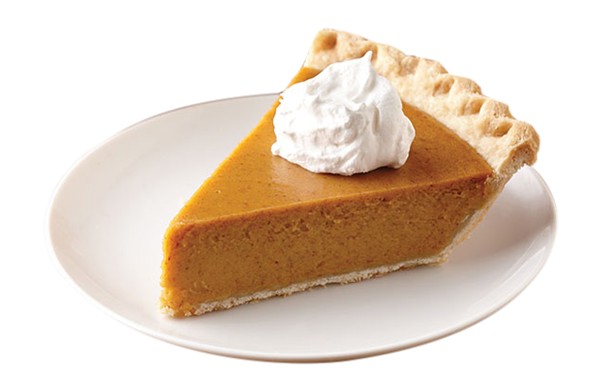

Perfect
Pumpkin Pie
The one and only!
EAGLE BRAND
makes this traditional dessert the perfect ending to a Thanksgiving feast.
Prep:
15 mins
Servings:
8
Cook:
55 mins
Yield:
1 - 9 inch pie
Total:
70 mins
Per Serving:
379 calories
Ingredients
1 (15 ounce) can pumpkin
1 (14 ounce) can EAGLE BRAND Sweetened Condensed Milk
2 large eggs
1 teaspoon ground cinnamon
1⁄2 teaspoon ground ginger
1⁄2 teaspoon salt
1 (9inch) unbaked pie crust
Directions
Preheat oven to 425 degrees F
Whisk pumpkin, sweetened condensed milk, eggs, spices and salt in medium bowl until smooth.
Pour into crust.
Bake 15 minutes.
Reduce oven temperature to 350 degrees F and continue baking 35 to 40 minutes or until knife inserted 1 inch from crust comes out clean.
Cool. Garnish as desired. Store leftovers covered in refrigerator.
Nutrition Facts
Per Serving:
379 calories; protein 5.9g; carbohydrates 30.5g; fat 14.3g; cholesterol 64mg; sodium
352.1mg.
COPYRIGHT 2021
ALLRECIPES.COM
. ALL RIGHTS RESERVED